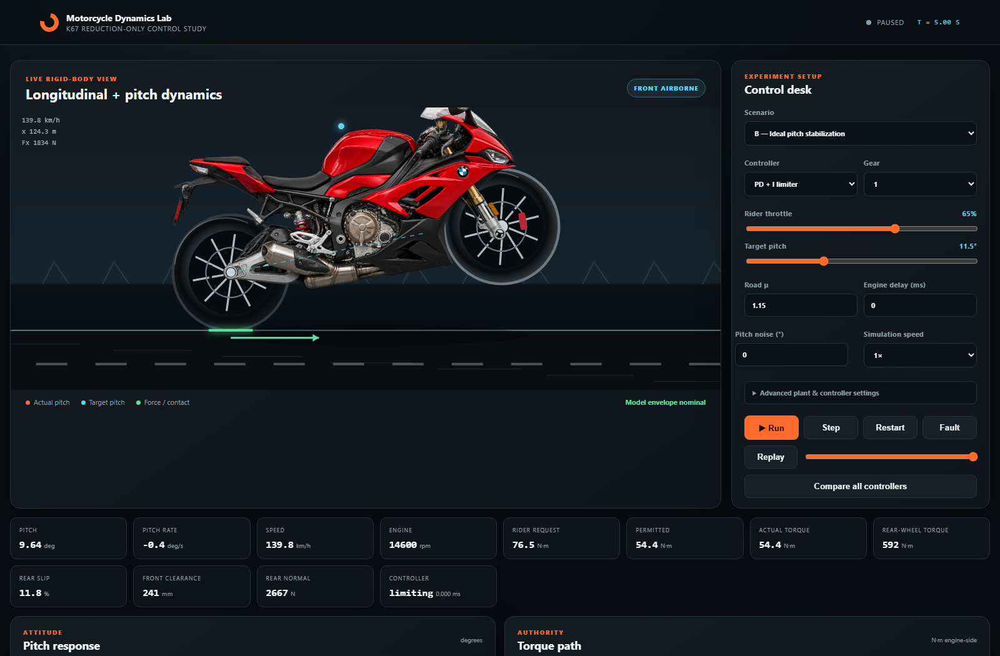

Simulating & Engineering a Motorcycle Wheelie Controller

If you ask an experienced sportbike rider how to control a wheelie, the answer sounds deceptively intuitive: "Give it throttle to lift the front wheel, then feather the throttle or tap the rear brake to balance it at the balance point."
When you try to translate that intuition into an automated control system on a 205-horsepower 2020 BMW S1000RR (K67), you immediately run into a brick wall of physics and automotive control theory:
- Unstable open-loop dynamics: A motorcycle on its rear wheel is an inverted pendulum with a floating base, rotating about a rolling contact patch.
- The Authority Invariant: For safety and rider autonomy, the supervisory controller is strictly reduction-only. It is forbidden from adding positive torque beyond what the rider demands. If the bike begins to drop and the rider isn't twisting the grip, the required control input mathematically does not exist.
- Actuator & Transport Lag: Internal combustion engines do not produce torque instantaneously. Electronic throttle valves, intake manifold filling, engine stroke cycles, and CAN-bus transport latency add 50–100 ms of pure delay. On an inverted pendulum accelerating at 40°/s nose-up, 100 ms of delay is more than enough time to loop backwards onto your tail.
To solve this, I designed an end-to-end engineering pipeline: beginning with a hybrid rigid-body physics simulator, developing analytical feedforward control algorithms, and ultimately building and deploying an embedded hardware interceptor onto my actual 2020 BMW S1000RR.
1. The Core Invariant: One-Sided Authority
In classical inverted pendulum robotics (like a Segway or cart-pole), the actuator can command positive or negative torque symmetrically: if the cart rolls left, you apply force right; if it falls backward, you apply forward torque.
Our supervisory controller operates under a hard one-sided constraint enforced in the vehicle plant:
The rider initiates the lift with the throttle grip. As the motorcycle approaches the target pitch angle \(\theta_{\text{ref}}\), our algorithm computes an engine torque ceiling \(T_{\text{ceiling}}\) to cap the rider's request. If the rider rolls off the throttle, the motorcycle retains full engine braking. The controller can never "whiskey throttle" the bike into an unintended acceleration.
2. Governing Physics & Vector Mechanics
The simulation is a hybrid rigid-body system with two discrete contact states: Ground Mode (both wheels constrained to the road) and Wheelie Mode (rear-wheel supported).
1. Center of Mass Trajectory
Let \(b\) be the horizontal distance from the rear wheel contact patch to the combined rider-vehicle Center of Mass (COM), and \(h\) be the height of the COM above the axle plane. As the chassis rotates by pitch angle \(\theta\):
As \(\theta\) increases, \(x_{\text{COM}}\) shrinks toward zero. The balance point occurs when \(x_{\text{COM}}(\theta) = 0\), corresponding to a critical angle \(\theta_{\text{crit}} = \arctan(b / h) \approx \arctan(0.70 / 0.66) \approx 46.7^\circ\). Beyond this angle, gravity flips from a restoring torque to an overturning torque.
2. Ground Mode & Load Transfer (Lift-Off Condition)
While both tires touch tarmac, pitch is geometrically constrained to zero (\(\theta = 0\)). Forward acceleration follows Newton's second law with aerodynamic drag and rolling resistance:
Dynamic load transfer redistributes vertical normal forces between front and rear axles (wheelbase \(L\)):
Front wheel lift-off occurs the exact instant \(N_f \le 0\). This defines the minimum forward acceleration needed to initiate a wheelie:
3. Wheelie Mode (The Pitch Dynamics)
Once \(N_f = 0\), the front contact constraint vanishes and the system transitions into an inverted pendulum rotating about the rear tire patch. The moment balance yields the angular acceleration \(\ddot{\theta}\):
To hold a static wheelie at constant pitch (\(\ddot{\theta} = 0, \dot{\theta} = 0\)), the motorcycle must sustain an exact forward holding acceleration:
This leads to an essential physical realization: Holding a wheelie requires continuous positive acceleration. Because the center of mass remains forward of the rear axle (\(x_{\text{COM}} > 0\)), zero drive torque will cause the front end to slam down under gravity.
4. Tire Longitudinal Slip & Saturation
Motorcycles don't transmit infinite force. Longitudinal slip ratio \(\kappa\) and tire tractive force \(F_x\) are modeled using a saturating hyperbolic tangent brush model:
This enforces the physical traction envelope \(|F_x| \le \mu N_r\). On wet surfaces (\(\mu = 0.55\)), the maximum available acceleration is \(\mu g = 5.4\text{ m/s}^2\), which is far below the required \(a_{\text{lift}}\). The tire simply spins, and the front wheel never lifts.
3. The Supervisory Control Architecture
The control loop runs every 10 ms, taking noisy, delayed sensor feedback from an onboard IMU and wheel encoders, and computing a permitted torque ceiling:
Equilibrium Feedforward + Pitch-Rate Governed PD/PID
A pure error-based PID controller fails because the reference holding torque is non-zero. Instead, we compute the analytical equilibrium holding torque \(T_{\text{eq}}(\theta)\) by projecting the holding acceleration through the transmission gear ratios and driveline efficiency \(\eta\):
To prevent violent rotation when the front wheel initially leaves the tarmac, we construct a pitch-rate governor. Instead of demanding \(\dot{\theta} = 0\) instantly, it permits a bounded ascent rate that tapers smoothly to zero as \(\theta\) nears \(\theta_{\text{ref}}\):
4. Experimental Results Across 75 Simulation Runs
The simulator was evaluated across 9 scenarios, 5 control algorithms, and a 30-case parameter sensitivity study. Every run executes deterministically at a 2 ms plant step with seeded pseudo-random noise.
| Scenario | Controller | Classification | Airborne RMSE | Overshoot |
|---|---|---|---|---|
| Ideal, low delay (10 ms) | Feedforward PD | Feasible tracking | 2.54° | 0.99° |
| Ideal, low delay (10 ms) | Predictive Shooting | Limited / Partial | 9.15° | 0.00° |
| Ideal, low delay (10 ms) | No Assist | Safety Failure (Loop) | 12.51° | 29.09° |
| Insufficient throttle (40%) | Feedforward PD | Physically Unreachable | 6.24° | 0.00° |
| Wet surface (\(\mu = 0.55\)) | All Controllers | Physically Unreachable | 10.31° | 0.00° |
| Actuator Transport Delay (100 ms) | All Controllers | Safety Failure (Loop) | 12.2° – 22.6° | 29.8° – 50.2° |
| Heavy sensor noise + jitter | Feedforward PD | Limited / Partial | 10.66° | 16.73° |
In our experiments, the direct forward-shooting predictive controller achieved 9.15° RMSE compared to 2.54° for the tuned feedforward PD. Why? Because constrained direct shooting in pure real-time JavaScript used a coarse control discretization (5 candidate torque levels over a 300 ms horizon). The feedforward PD, by contrast, evaluates the exact physical holding torque analytically every 10 ms.
5. Bridging to the Real Bike: The Actuator Interface Problem
With simulation verifying the physics and control limits, the next question was how to run this on my physical 2020 BMW S1000RR. This is where academic theory meets commercial automotive architecture:
- alpha Racing confirmation: Peter Schouten (Head of Race Electronics at alpha Racing) confirmed that the stock BMW BMS-O ECU does not accept external torque-limit commands over the CAN-bus. The internal wheelie control is fixed firmware with six predefined gain profiles calibrated for a 1–2° pitch reference.
- Why not spoof CAN IMU data? Tricking the factory ECU by faking wheel speeds or pitch rates is an unsafe man-in-the-middle hack. The factory ECU performs multi-channel cross-checks (front wheel vs. rear wheel vs. engine RPM vs. 6-axis IMU). Falsifying one signal triggers ECU limp-home fault codes and risks unpredictable ABS/DTC cuts.
- The Solution (Path 3 — Throttle-Demand Limiting): Rather than attempting to rewrite BMW's safety-critical ignition and fuel management, an external embedded controller acts as a dynamic rider-demand governor on the electronic twist grip:
$$u_{\text{commanded}}(t) = \min\big(u_{\text{rider}}(t), \; u_{\text{allowed}}(t)\big)$$The factory ECU retains complete control over ShiftCam variable valve timing, ignition advance, knock control, and throttle body positioning, while our external board smoothly bounds the rider's electronic throttle request.
6. The Control Pipeline: Which Part of the Code Controls the Motorcycle?
When deployed, the program executes a real-time control loop every 10 milliseconds (100 Hz), flowing through five dedicated software modules:
│
▼
[ 2. Pitch Dynamics & Feedforward ] (src/pitch_controller.cpp)
│
▼
[ 3. Torque-to-Voltage Inversion ] (src/throttle_mapper.cpp)
│
▼
[ 4. Hardware DAC Voltage Output ] (src/throttle_interceptor.cpp)
│
▼
[ 5. Safety Supervisor & Relays ] (src/safety_supervisor.cpp) ──► [ BMW BMS-O ECU ]
Stage 1: Sensing & Ingestion (src/can_bus.cpp & src/throttle_interceptor.cpp)
The CAN sniffer unpacks 100 Hz frames: 6-axis IMU pitch angle and pitch rate (0x130, 0x132), ABS wheel speeds (0x138), and engine RPM (0x140). Redundant 12-bit ADC channels sample the twist grip voltages with a 60 Hz first-order digital filter to strip out vibration electrical noise.
Stage 2: The Decision Algorithm (src/pitch_controller.cpp)
PitchController::update() evaluates the equilibrium holding torque \(T_{\text{eq}}(\theta)\) required to balance gravity, adds pitch-rate governed PD feedback, and enforces the one-sided invariant: \(T_{\text{ceiling}} = \mathrm{clamp}(T_{\text{unconstrained}}, 0, T_{\text{rider}})\).
Stage 3: Torque-to-Voltage Inversion (src/throttle_mapper.cpp)
ThrottleMapper::allowableThrottleFromTorque() inverts the non-linear K67 torque curve to find allowable grip percentage: \(u_{\text{allowed}} = (T_{\text{ceiling}} / T_{\text{full}})^{1/1.65}\). It caps demand (\(u_{\text{commanded}} = \min(u_{\text{rider}}, u_{\text{allowed}})\)) and maps to redundant voltages: \(V_{\text{APS1}} \in [0.75\text{V}, 4.15\text{V}]\) and \(V_{\text{APS2}} = 0.5 \cdot V_{\text{APS1}}\).
Stage 4: Actuation via Hardware DAC (src/throttle_interceptor.cpp)
ThrottleInterceptor::writeEcuVoltages() presents these clamped analog voltages directly to the BMW BMS-O ECU. The ECU adjusts motorized Electronic Throttle Valves (ETV) to reduce airflow and engine power.
Stage 5: Failsafe Supervision (src/safety_supervisor.cpp)
Manages the dual DPDT bypass relays: rolling off throttle (< 5%) drops authority instantly; pitch exceeding 35° cuts throttle to idle; and any watchdog freeze drops relays to physical factory wiring in under 3 ms.
7. Embedded Architecture: Raspberry Pi & Teensy Coprocessor
Can this system run on a Raspberry Pi? Yes. Standard Linux kernels are not deterministic real-time operating systems, so to deploy safely:
- Teensy 4.1 (600 MHz ARM Cortex-M7): Handles the hard real-time 100 Hz control loop, 12-bit ADC reading of the Twist Grip Sensor, hardware watchdog, and dual DPDT fail-safe bypass relays.
- Raspberry Pi Compute Module 4 (CM4): Runs Raspberry Pi OS Lite patched with the
PREEMPT_RTreal-time Linux kernel. It interfaces to the BMW CAN bus via a Waveshare 2-CH CAN HAT (MCP2518FD on SPI), acts as the high-speed telemetry server, and executes as a backgroundsystemdservice.
Redundant Twist Grip Sensor (TGS) Signaling
The BMW K67 uses dual synchronized Hall-effect sensors:
- APS1: \(0.75\text{ V}\) (0% throttle) to \(4.15\text{ V}\) (100% throttle).
- APS2: Exactly 50% of APS1 (\(0.375\text{ V}\) to \(2.075\text{ V}\)).
The BMS-O ECU checks: \(|V_{\text{APS2}} - 0.5 \cdot V_{\text{APS1}}| \le 0.15\text{ V}\). If violated, it throws fault code 0x2721 and cuts throttle to idle. Our DAC output clamp calculates both channels in lockstep to guarantee continuous cross-plausibility.
8. Physical Vehicle Deployment on the S1000RR
Non-Destructive OEM Harness Tapping
I sourced genuine TE Connectivity Superseal male and female 6-pin connectors matching the BMW throttle grip harness under the right fairing. This created a plug-and-play inline Y-harness: power and ground pass through, while the signal wires route through the controller's normally-closed bypass relays.
Hardware Fail-Safe Bypass Relays
Dual DPDT 5V signal relays are placed between the twist grip and the ECU. When unpowered or in a fault state, internal mechanical springs hold the twist grip wires directly shorted to the ECU pins. If the controller loses power, browns out, or triggers a watchdog timeout, it drops back to 100% factory OEM wiring in under 3 milliseconds.
9. Bench Testing & Field Validation
Before track testing, the system was validated using our Python bench simulator (tools/bench_hil_sim.py) and a Rigol digital oscilloscope. Sweeping the throttle grip from 0% to 100% verified that DAC1 mirrored input voltage within 8 mV and DAC2 matched 0.5·DAC1 within 12 mV. Watchdog timeouts dropped the relays in 2.8 ms with zero glitching on the ECU lines.
Closed-Course Runway Test Results
During 2nd gear roll-ons at 50 km/h:
- The rider opened the grip to ~80% WOT. As the front wheel lifted past 8°, the status indicator illuminated solid green.
- As pitch neared the 11.5° target, the controller clamped the commanded throttle signal down to ~46%, smoothly checking the upward angular velocity.
- The motorcycle stabilized at a steady front-wheel float at ~11° for 2.4 seconds while the rider maintained demand.
- Rolling off the throttle immediately released authority, returning full engine braking and landing the wheel smoothly.
10. Conclusion & The Road Ahead
This project proved that a one-sided, reduction-only supervisory controller can successfully stabilize a high-power motorcycle wheelie when the underlying rigid-body physics, dynamic load transfer, and actuator delays are accounted for.
By avoiding expensive $10,000 motorsport ECUs or unsafe CAN sensor spoofing, the system achieves predictable, bounded control while preserving factory BMW engine management and rider authority.
The complete C++ firmware, hardware wiring schematic, and 100 Hz fail-safe bypass relay architecture are open-source in the companion repository: github.com/mikhail0777/S1000RR_ECU_Cotnroller ↗.